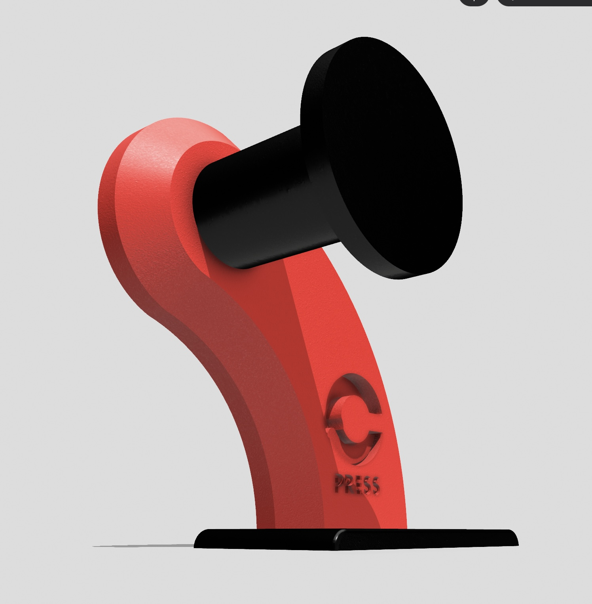

Modelos 3D de dispensador de cinta CPRESS

Aprende a hacer el biomaterial Shimel
Ingredientes
Una taza de maicena
4 paquetes de gelatina
5 cucharadas de jabón
¾ taza de agua caliente
Instrucciones
Diluir los 4 paquetes en gelatina en la ¾ taza de agua caliente.
Añadir a un bowl junto a la maicena, revolver y añadir 5 cucharadas de jabón líquido.
Utilizar la batidora hasta que obtenga una consistencia espumosa.
Dejar en un bowl o bandeja plana, refrigerar por 1 hora o hasta que esté firme.